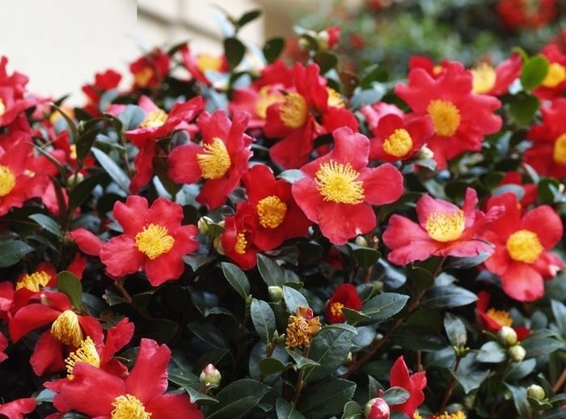

Topiary, the training of living trees and shrubs into decorative shapes
Topiary has given our gardens a sense of structure for centuries.
Topiary is the horticultural practice of training perennial plants by clipping the foliage and twigs to form clearly defined shapes.
Best Plants for Topiary
The best plants for topiary that will add year-round structure, form, and contrast to your garden scheme.
The best plants for topiary include evergreens and semi-evergreens that are hardy, easy to clip, and dense enough to create a smooth form.
Best Plants For Topiary
Beyond the usual green box, yew and privet, you can shape a wide array of evergreen shrubs and trees into beautiful garden sculptures.
1. Buxus Sempervirens – Box
Small leaves and dense texture make box the classic choice for topiary designs.
2. Ligustrum Delavayanum – Delavay Privet
This hardy evergreen is not susceptible to pests and diseases, ideal for formal gardens.
3. Ilex – Holly
Glossy leaves and berries make English holly a decorative option for garden sculptures.
4. Pittosporum
Neat evergreen shrubs that prefer a sheltered, sunny position for better shaping.
5. Photinia
Photinia shrubs are great for privacy hedges and formal garden outlines.
6. Euonymus ‘Emerald N Gold’
A slow-growing compact evergreen shrub suitable for detailed topiary work.
7. Camellia
Excellent shrubs for shaded areas, camellias offer beautiful flowers and evergreen leaves.
8. Laurus Nobilis – Bay
Architectural narrow leaves make bay trees popular for topiary and container gardening.
9. Trachelospermum Jasminoides – Star Jasmine
A vigorous fast-growing flowering vine, ideal for quick topiary frames.
Send mail to get this service...